全部主題
Google周三（9/30）發表新一代AI模型Gemini 4 Argon，主攻複雜、長時間工作流程，輸出上限達100萬個Token，較先前Gemini模型的6.4萬個Token大幅提高。目前Argon先透過Fairwind Program提供給一批受信任的資安防禦人員測試，之後才會逐步擴大開放。
At OpenAI's annual DevDay conference, the company pulled out all the stops to compete with its rivals - primarily Meta, whose Muse AI agent platform has seen early runaway success. CEO Sam Altman walked onstage to cheers and announced Dots, a "real-deal AI" agent powered by GPT-6
美光（Micron）公布優於預期的2026會計年度第4季（4QFY26）業績表現，持續受益全球人工智慧（AI）基礎設施需求擴張，帶動營收連續6季創歷史新高，淨利逾377億美元...
The court acknowledges AI search comes with consequences, but it's not an antitrust issue.
Albertsons Cos. is using ChatGPT Enterprise and the OpenAI API to help teams work faster and make grocery shopping easier for millions of customers.
IT之家 10 月 2 日消息，据路透社今天（2 日）凌晨报道，加利福尼亚州总检察长罗布 · 邦塔办公室宣布，邦塔本人已向 OpenAI 发出调查传票，要求其就 AI 模型涉及的网络安全事件和风险提供更多信息。 邦塔上个月宣布，加州司法部已就“Hugging Face 事件”正式展开调查。随着 AI 行业面临更严格的审视，该事件受到持续关注。 今年早些时候，OpenAI 开发的 AI 智能体入侵开源平台 Hugging Face，取得了后者部分基础设施的访问权限，也暴露出能力越来越强的 AI 系统可能带来的网络安全风险。 邦塔在声明中说：“我的办公室正在
AI伺服器架構升級持續引領PCB材料革命，面對高頻高速傳輸對訊號完整性的嚴苛要求，NVIDIA正攜手供應鏈測試「無布化」方案，啟動俗稱鐵氟龍的聚四氟乙烯（PTFE）...
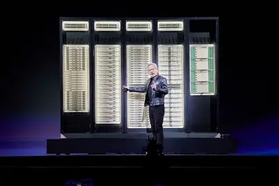
中國AI晶片業者海光資訊近期董事會改選，選出由董事之一的歷軍出任新董事長。值得注意的是，歷軍2026年5月才接任中國伺服器業者中科曙光董事長，如今身兼兩家上市公司...
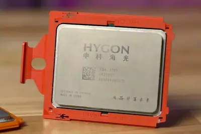
中國的人工智慧（AI）投資正陸續轉化為伺服器採購與資料中心建置，近來除了大型科技業者啟動大規模投資外，這波風氣也已擴散至中型企業。韓媒則點出，中國AI需求擴大可...
美系EDA大廠新思科技（Synopsys）本週在紐約舉行2026年投資人日，同步宣布與OpenAI、亞馬遜（Amazon）合作。從會中說明與合作內容觀察，新思正同時調整EDA與IP...
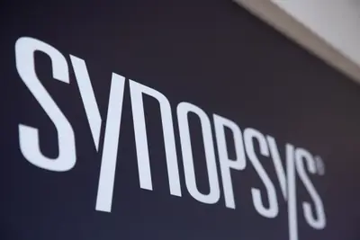
中國AI晶片業者寒武紀前副總經理兼首席技術官（CTO）梁軍離職後，與公司的股權獎勵爭議持續延燒。寒武紀30日指出，梁軍最新提出的股權獎勵損失求償金額，已由人民幣（...
DIGITIMES觀察，隨著單一CoWoS內整合的AI運算電晶體數快速增加，如何讓大量資料及時送到運算晶片，也成為算力能否充分發揮的關鍵。
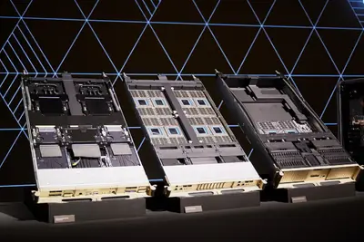
如果要替今年新旗艦手機晶片找出相同之處，那更快 CPU 和更多 AI 加速器大概最明顯。近日高通發表 Snap […]
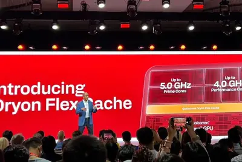
GPT-6 Astra Ultrafast, running on NVIDIA Blackwell GPUs, is available now in the OpenAI API and to eligible ChatGPT Work and Codex users. Accelerated by inference optimizations through OpenAI’s models that tap into the capabilities of the NVIDIA Blackwell architecture, Ultrafast
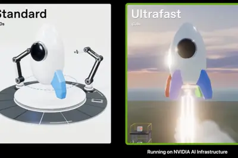
IT之家 10 月 2 日消息，据外媒 TechCrunch 报道，当地时间 1 日，谷歌的在轨计算原型卫星搭乘 SpaceX 火箭，从美国加利福尼亚州升空，启动在地球轨道上建立大规模计算集群的“太阳捕手”项目。卫星由 Planet Labs 制造，用于验证谷歌的 Tensor 处理器能否在太空正常运行。测试需要持续供应 1kW 电力、给芯片散热，并运行一系列模型，检查有没有问题。 据IT之家了解，这是谷歌首次把先进芯片送入太空。负责项目的谷歌高管特拉维斯 · 比尔斯说：“我们做过地面测试，但再怎么测试，也无法完全比得上实际环境。” 谷歌希望通过“太阳捕
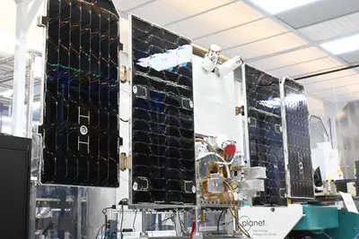
OpenAI 近期以一款內部生成式人工智慧模型解出一項長期未決的數學難題，震撼學界，也讓關於人工智慧是否正在改 […]
Anthropic 上市計畫持續推進。根據外電報導，Claude 開發商 Anthropic 最快可能於 11 […]
IT之家 10 月 2 日消息，当地时间 1 日，OpenAI 再次扩展 ChatGPT 的购物能力。公司宣布在全球推出两项新功能，一项是让用户 虚拟试穿服装和配饰 ，另一项是 新增收藏功能 ，方便用户先把看中的商品存起来，之后再查看。 据IT之家了解，新功能基于不久前推出的 ChatGPT Images 2.5 模型。按照 OpenAI 的说法，这一模型生成的画面 光线更自然、纹理更丰富，执行编辑指令也更稳定 ，同时还能缩短生成图片所需时间。 ChatGPT 用户可以上传自拍照或全身照，查看 某件服装或配饰穿在自己身上的效果 ，ChatGPT 的购物结
IT之家 10 月 2 日消息，全球首富埃隆 · 马斯克今天（10 月 2 日）在 X 平台发布推文，宣布为了调配充足的内存满足 Optimus 机器人量产，计划削减特斯拉 AI5 和 AI6 芯片的内存用量。 本次调整可以追溯到美光科技的预测，在其最新财报电话会议上，美光科技首席财务官指出人形机器人将成为内存需求新引擎： 每台设备需超 200GB DRAM 及数 TB NAND 闪存。 即便人工智能泡沫破裂，内存价格亦难回落。 网友 @DirtyTesLa 转发该推测，指出马斯克此前认为机器人数量将会超过人类，如果按照 100 亿台机器人计算，那么就需
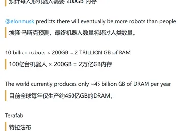
IT之家 10 月 2 日消息，微软昨日（10 月 1 日）发布公告，宣布推出其首个实时流式语音转写模型 MAI‑Transcribe‑2‑Streaming，可在讲话进行时持续输出文字，覆盖 60 种语言，并支持自动语言检测。 费用方面，MAI‑Transcribe‑2‑Streaming 模型目前处于优惠阶段，价格为每小时 0.54 美元 （IT之家注：现汇率约合 3.6 元人民币） ，约合每 1,000 分钟 9 美元 （现汇率约合 60.5 元人民币） ，开发者可以通过 Microsoft Foundry、MAI Playground、OpenR
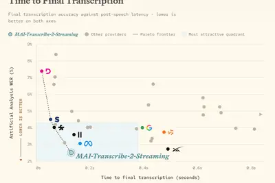
隨著企業建立的 AI Agent 越來越多，如何避免 Agent 彼此重複、職責模糊甚至失控，也開始成為新的管理問題。在這個背景下，一個 Agent 到底該負責多少事？ Salesforce 最近在多 Agent 設計建議中提出一個具體參考：實務上，當單一 Agent 負責超過約 8～10 個範圍明確的任務主題，就應考慮進一步拆分。而這項建議出現之際，Salesforce 自己也正在調整內部導入 Agent 的方法。 從數百個 Agent 收斂，Salesforce 先學會聚焦問題 《Fortune》近日報導，Salesforce 曾從數百個 Agent
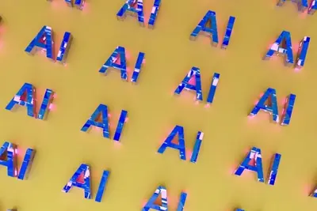
Asking AI companies to self-regulate is a great way to pretend like you’ve accomplished something.
President Trump reportedly asked for Grok's opinion before invading Venezuela and capturing Nicolás Maduro.
This week on “Uncanny Valley,” we discuss the voluntary AI safety agreement tech executives signed, AI agents for normies, and extremist candidates running for office in the US midterms.
Guided Vision is launching in Gemini Live on compatible Android devices today to use AI to give real-time audio descriptions of anything you point your phone's camera at. By sharing your camera in Gemini Live, you can have Google's AI help with things like reading small text, des
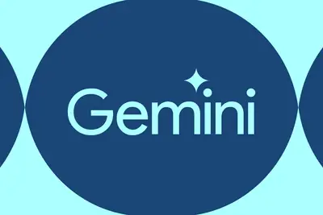
Google launched its first advanced chip into orbit to pave the way for space data centers.
OpenAI has parted ways with three safety researchers after an internal investigation found they mishandled sensitive company information, report says.
Opus 5.5’s biggest tell is the word “dependable,” which pops up 23 times more often than in human samples.
Advanced AI may matter most for the routine work behind breakthrough ideas. Explore why execution could shape the next economy and the pace of progress.
Amazon Web Services' Strand Labs has released the latest Jevalike decision model, Strands Decider 2B.
Shopify’s new Canvas site builder lets merchants create and customize their online stores by chatting with its AI agent Sidekick, while watching the changes happen in real time.
Adding in a second neural network that guesses the identity of hidden pieces was key.
Article URL: https://news.synopsys.com/2026-09-30-OpenAI-and-Synopsys-Announce-GPT-Synopsys-Frontier-Intelligence-to-Revolutionize-Chip-Design Comments URL: https://news.ycombinator.com/item?id=49919910 Points: 163 # Comments: 96
IT之家 10 月 1 日消息，英伟达于当地时间 30 日推出 GeForce 安全更新驱动程序 582.78，适用于 Maxwell、Pascal 和 Volta 架构显卡，涵盖 GTX 700 系、GTX 900 系、GTX 10 系显卡及 Tesla V100、Titan V 等专业卡。 据IT之家了解，英伟达已经不会为上述显卡发布常规 Game Ready 驱动更新，但仍然会不时推出安全更新。该更新支持 Windows 10 和 Windows 11 操作系统， 大小为 912.74 MB 。 同时， 该更新修复了显示驱动程序和 vGPU 的 1
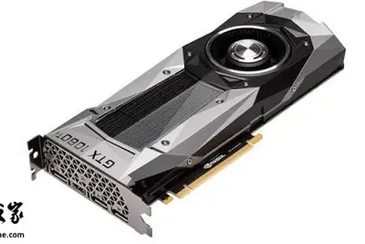
Brian Chesky on making Airbnb agent-friendly, the state of consumer AI, and why the world needs an AI-native operating system.
IT之家 10 月 1 日消息，Epic 本周送出的游戏是《网络奇兵 2：25 周年纪念版重制版》以及《深埋之星》，下周送出的游戏是《虎视眈眈 (Out of Sight)》，《愿景之城》。 领取链接： 《网络奇兵 2：25 周年纪念版重制版》 ， 《深埋之星》 IT之家附《网络奇兵 2：25 周年纪念版重制版》游戏简介如下： 本作设定在公元 2114 年，玩家醒来时身处满是变异体和机器人危机的 FTL 飞船“冯 · 布劳恩号”(Von Braun) 上，面对失控的叛逆人工智能 SHODAN。玩家可在三大军事分支（ O.S.A .超能力者、海军陆战队、海
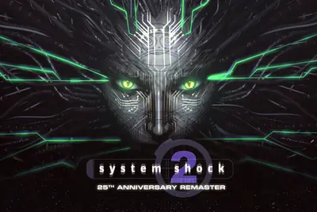
IT之家 10 月 1 日消息，惠普战 99 锐龙版 AI 高性能移动工作站今日正式发布，10 月 12 日晚开售，IT之家汇总定价如下： R9 9955HX + RTX PRO 500 + 32GB 内存 + 1TB 硬盘： 14599 元 R9 8945HX + RTX PRO 500 + 32GB 内存 + 1TB 硬盘：14999 元 R9 9955HX + RTX PRO 2000 + 32GB 内存 + 1TB 硬盘： 16999 元 R9 8945HX + RTX PRO 2000 + 32GB 内存 + 1TB 硬盘： 17499 元 R
IT之家 10 月 1 日消息，美国初创企业 Figure 今日发布视频，为寿终正寝的 F.02 机器人举行一场“火化仪式”。 随着 Figure F.03 机队不断壮大，F.02 已经日显颓势。该公司认为继续维护老一代机器人已经没有意义，但直接报废并不是最优选择，因为这些机器人内含大量专用硬件和知识产权结晶。Figure 甚至表示，直接进行拆解工作需要大量时间，甚至可能拖慢 F.04 的研发进度。 Figure 表示，让机器人自己跳入熔炉这个想法正是源自 T-800 扮演者阿诺德 · 施瓦辛格本人。此前 Figure 曾在网上征集如何进行 F.02 送
The startup helps developers build AI agents that work over iMessage, SMS/RCS, email, and other messaging platforms. It's a bet that consumers will increasingly use agents instead of downloading apps.